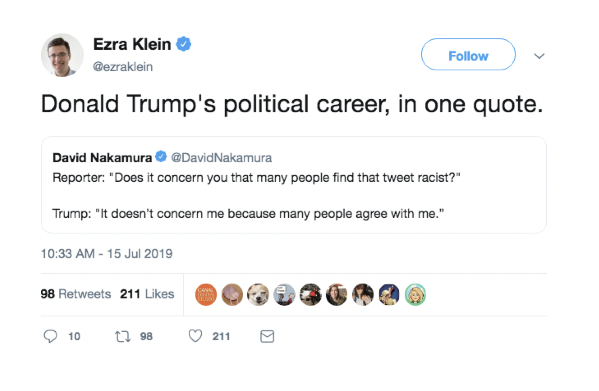

2016 United States Elections : In-group Favoritism and Out-group Hostility

Are Sensation and Perception Separate Stages?

How Intelligent is Perception?
The Circular Problem of Attention and Perception
Software Profile | Internship | Preparation Plan | IITK